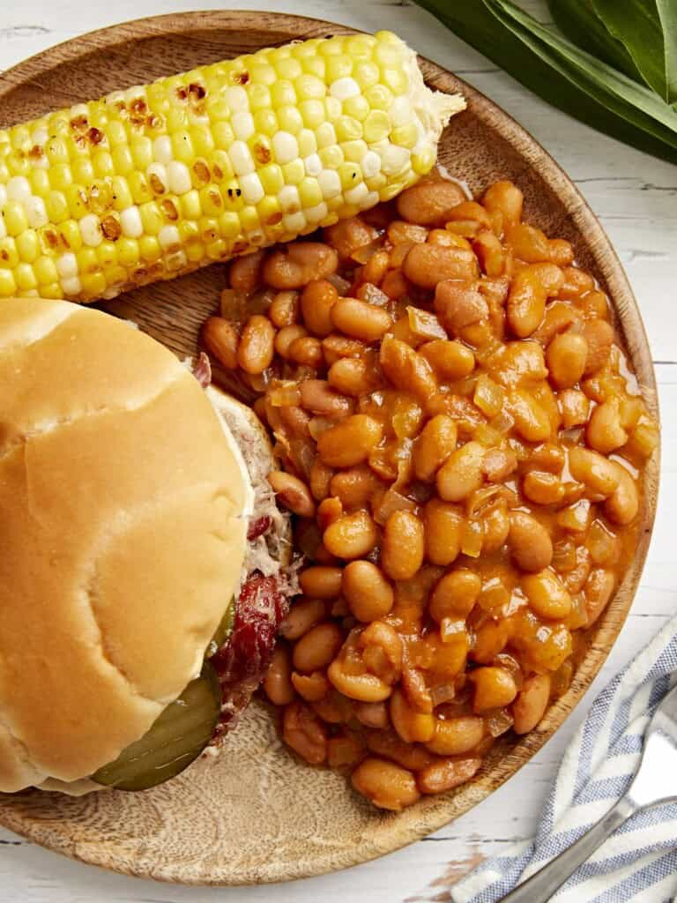

Ingredients
- 1 Tbsp olive oil
- 1 tsp smoked paprika
- 1 tsp salt
- 1/2 onion, diced small
- 2 15-oz. cans pinto beans, drained
- 1/2 Tbsp Dijon mustard
- 1/4 cup ketchup
- 2 dashes Worcestershire sauce
- 1 tsp apple cider vinegar
- 1/4 cup packed brown sugar
- 1 cup water, plus more if needed
Directions
- Add the olive oil, smoked paprika, salt, and diced onion to a medium pot.
Stir and simmer on medium heat until the onions are glossy and soft.
- To the pot, add the drained beans, Dijon mustard, ketchup, Worcestershire, apple cider vinegar, and brown sugar.
- Stir to combine and cook on medium heat for 4-5 minutes.
- Add water, as needed, until beans are just covered. Simmer on medium heat for 5-7 minutes until completely warmed through.